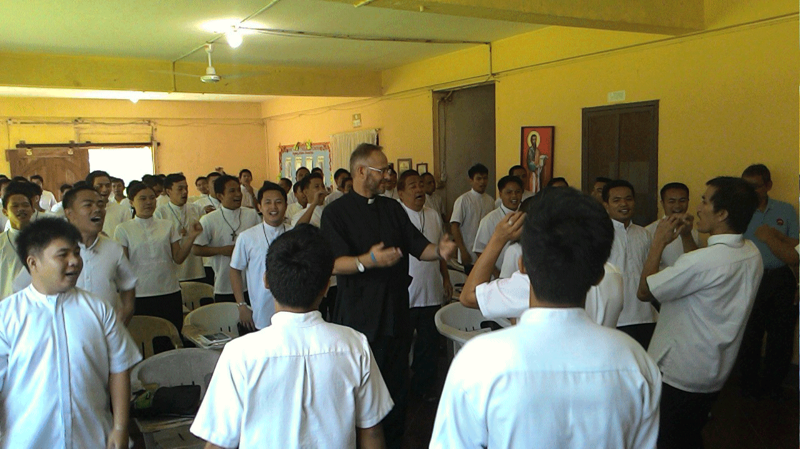

To understand the pastoral vocation of Fr. JP Heath is to trace a path that has refused the comfortable centers of ecclesiastical authority. From his roots in the arid expanse of Namibia to the altar of St. George’s Cathedral during South Africa’s transition to democracy, his ministry has consistently gravitated toward the places where human dignity is contested and defended.
“Theology is never a neutral intellectual game. If it does not bring liberation to the sick, the excluded, and the weary, it is merely noise.”
Chapter I: The Namibian Dust and Early Formation
Born into an Afrikaans-speaking family in Namibia, JP’s early consciousness was formed against the backdrop of institutionalized racial segregation and strict religious traditionalism. Encountering the deep contradictions between the liberating message of the Gospels and the social dogmatism of the apartheid era, he was drawn into theological studies at Potchefstroom University.
His academic training was marked by an insistence on biblical integrity and human rights—an orientation that led him out of cultural insularity and into the diverse, prophetic witness of the Anglican Church of Southern Africa.
Chapter II: The Crucible of Cape Town (1994–1995)
In 1994, the historic year South Africa held its first democratic elections, JP was ordained as a Deacon in the Anglican Church, followed by his ordination to the Priesthood in 1995 at St. George’s Cathedral in Cape Town.
Known across the world as the “People’s Cathedral,” St. George’s had been the gathering sanctuary of resistance against apartheid under Archbishop Desmond Tutu. Serving in this crucible instilled in JP an indelible understanding: the Christian altar does not exist to escape the world, but to gather the brokenness of the world into the healing hands of God.
Chapter III: 2000 — Breaking Silence and the Theology of Grace
In 2000, JP received his HIV-positive diagnosis. At that time, across Sub-Saharan Africa, HIV was shadowed by profound terror, social ostracization, and pulpit condemnation.
Rather than retreating into protective silence, JP made the courageous decision to disclose his status publicly from the pulpit. He became one of the very first ordained Anglican priests in Africa to openly declare his status, shattering the ecclesial taboo that treated HIV as a moral failure rather than a physical health crisis.

Chapter IV: Global Accompaniment, INERELA+, and Authored Publications
Recognizing that religious stigma was actively driving vulnerable people away from life-saving medical care, JP helped co-found and guide INERELA+ (The International Network of Religious Leaders Living with or Personally Affected by HIV).
His advocacy took him across Africa, Geneva, Asia, and the Americas—consulting with UNAIDS, the World Council of Churches (WCC), and regional faith networks. During this global ministry, he authored curricula and co-authored two landmark theological volumes addressing world religions and human sexuality:
1. Behold, I Make All Things New
What do the sacred texts of Judaism, Christianity and Islam really say in regard to human sexuality? Co-edited with Rev. Loraine Tulleken, this volume emerged from the Church of Sweden’s 2015 Festival of Theology. Launched at St. George’s Cathedral in Cape Town with a foreword and endorsement by Archbishop Njongonkulu Ndungane, it examines scriptural verses frequently cited to condemn homosexuality, re-reading them through the lens of God's unconditional grace.
2. I Am Divine. So Are You
How Buddhism, Jainism, Sikhism and Hinduism affirm the dignity of queer identities and sexualities (HarperCollins India). Introduced by Devdutt Pattanaik, edited by Jerry Johnson, and co-edited by Rev’d Loraine Tulleken and Rev’d J.P. Mokgethi-Heath. Expanding the theological conversation beyond Abrahamic traditions, this landmark volume incorporates the Karmic faiths—representing nearly a third of global humanity—demonstrating how ancient traditions recognized gender and sexual fluidity and recasting world religions as allies of global queer emancipation.
Both volumes are available internationally via Amazon (Behold) and Amazon (I Am Divine).

Chapter V: Malmö and the Ministry of the Harbour
In 2019, JP moved to Sweden. Today, he serves in the Diocese of Lund within the Church of Sweden, based at St. Petri Church in Malmö, while also serving as chaplain to international merchant seafarers through the Sailors' Church (Sjömanskyrkan) [JP TO CONFIRM: CURRENT 2026 OFFICIAL TITLE].
In Malmö harbour, JP climbs the gangways of international cargo vessels that dock from every corner of the planet. These multinational crews—frequently from the Philippines, India, Eastern Europe, and Africa—spend months in isolation, carrying 90% of the goods that sustain Western society. JP’s ministry provides pastoral presence, communication with distant families, practical welfare support, and human accompaniment.
Chapter VI: The Shared Table
Throughout his journey, culinary hospitality has remained an essential spiritual anchor. In his personal food writings (Flavours), JP reflects on the sacramental nature of cooking: how kneading dough, braising meat, and welcoming a guest to the table embodies the Gospel's call to fellowship and life in abundance.
Biographical Provenance Note
This biographical profile is synthesized strictly from primary source documents, public media records, and verified ecclesiastical archives. Unresolved contemporary details (including specific country counts and current 2026 administrative titles) remain marked for confirmation with Fr. JP Heath directly.